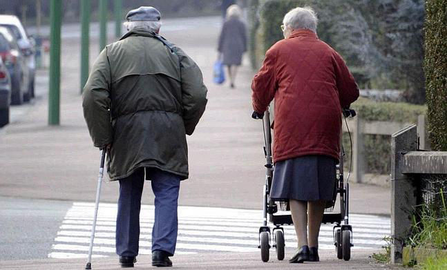

Las alteraciones de la marcha ocurren a medida que el individuo envejece
Los estudios han demostrado que las alteraciones en la marcha derivan de causas neurológicas y no neurológicas y se dan a medida que el individuo envejece.

El 85% de personas de 60 años tienen una marcha normal pero cuando una persona llega a los 85 años solo el 20% de la población mantiene una marcha normal

En la población joven comúnmente no se observan trastornos de la marcha a no ser que se deriven de enfermedades del desarrollo o musculoesqueléticas. [4]